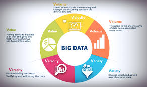
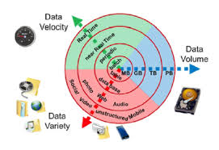

Characteristics of big data
1-volume-a huge amount of data
2-varacity-is consistencies and uncertainly in data
3-variety-differentformats of data from various sources
4-velocity –high speed of accumulation of data
5- value-extract useful data


links: